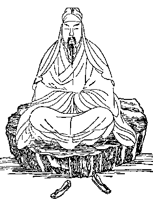
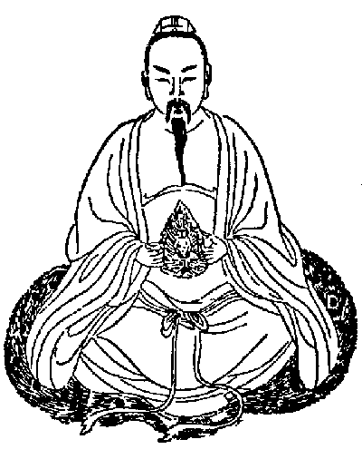
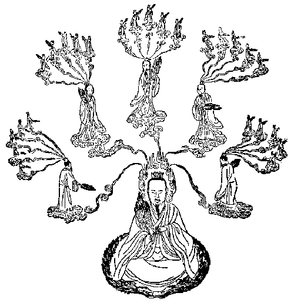
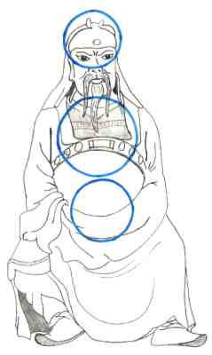
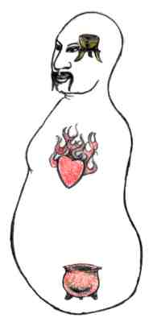
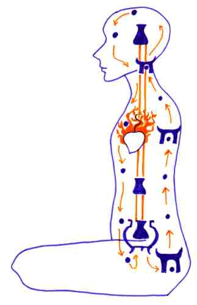

introspection and silence

forming the pearl which grows to the golden embryo

having created a heavenly body

the spiritual master who acts on many locations at once
OBE in Taoism
Part 1
The taoistic mystic methods have developed from asian shamanism and are very similar to the kundalini yoga and hatha yoga practices in the indian himalay regions.
Images from: "Geheimnis der Goldenen Blüte", by Richard Wilhelm, with
commentation of C.G. Jung; Zürich, Rascher Edit., 1957 (german edition)

introspection and silence

forming the pearl which grows to the golden embryo
having created a heavenly body

the spiritual master who acts on many locations at once
A main feature of taoistic mystic exercises is an inner alchemistic process. In
combination of a special lifestyle and body exercises a type of meditation is
performed, in which the different forms of inner energies are melted to form a
new spiritual immortal body. For a part it seems like the state of pregnancy,
because in the abdomen first is formed a golden ball (called pearl, poetical a
peach), which later develops to an embryo.
The three substances, which are melted together, are Ching = sexual energy (located at the base of the body), Chi = may be translated as ether (has its source in the heart) and Shen = is a spiritual light substance/force (its source is located in the head).


The three cinnabar fields, centres of transformation
In the inner alchemistic process by means of the heat of the
heart the sexual energy (Ching) is transformed to Chi. In Taoist alchemy
symbolically Ching, related to water, is evaporated and transformed to Chi
(small circle). Chi is a kind of subtle matter, analog to the esoteric western
term ether. In a next step Chi rises upwards the spine into the head, where it
melts with the spiritual light (Shen) to form the substance of which the
immortal body is made. From here this heavenly substance is transported to the
abdomen to nourish the golden embryo, thus closing the inner circle of
meditation and let you start the next one.
(Originally in the text above I only wanted to sketch the process without
intention to describe the Taoist method of meditation. But because of interest I
later on have written a second part of Taoist yoga with a more precise
description of the meditation process - see part 2)
To a certain degree this Taoistic exercises are a Chinese form of the Hinduistic yoga kundalini exercises.

As the Taoism is many thousands years of age, traditions, philosophic dogmas of elements, medical teachings, alchemistic thoughts and much more have accumulated and veiled the original shamanistic yoga. It is not necessary to perform the exercises as complicated as tought in traditional Taoism.
Below you have a very simplified Western meditation, which resembles to some part to the Taoist meditations and which will be sufficient for the first. The accumulation of chi, which is very important in Taoism, you will best learn by chi gong.
A degenerated goal of Taoism is to prolong life which differs to the original eschatological goal.
Imagine a stream of light flowing upwards your spine and leaving your body through thy mystic port of the fontanella (top of the head). A hand span above the top of your head the stream spreads and myriads of pearls of light fall down, so as you had a fountain of light at the top of your head.
(In mystic tradition it is thought that the pearls of light again enter your body at the base of your spine).
An other exercise, not just adequate as well.
Sit comfortably and relax. Direct your awareness within your body; feel the warmth of your body and feel the blood circulate in the vessels. As you feel life pulsate in your body, let your awareness become finer and try to feel the finer inner energies. Do not tell yourself that this is "only your imagination." It works nevertheless. You will feel light encircling your body.
Feel that light rises up your right arm, beginning at the palm hands, and as it flows into your chest. (Here you may pause, holding your awareness here, while breathing in and out.) Then feel that the light that entered your chest from your right arm crosses your chest and continues down your left arm to the palms of both hands.
You may do this to the rhythm of your natural breathing. Feel yourself cleansed and filled with peace.
You may also perform this kind of meditation by letting your vital energy circulate in the same way as shown above. Why? Well, the stress of our daily business lives brings some disorder to our energy balance; for instance energy is accumulated in the head while different organs in the body are under-nourished by vital energy. You may be full of vital force, but if this force is not balanced, you are in danger of becoming sick.
Source: http://mailbox.univie.ac.at/Alfred.Ballabene/english/obepart3/taoism.htm